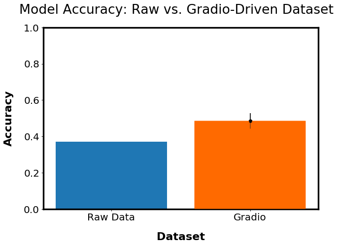

The Harvard n2c2 clinical notes dataset consists of doctor notes of a patient visit, and classifies each patient as non-smoker, former smoker, or current smoker. The dataset is quite limited, with the training dataset consisting of 140 notes and the test set consisting of 25 notes. This dataset also suffers from class imbalance, as only 33 of the 140 notes are labelled as current smokers.
Because the training dataset is so small in this scenario, we will label everything in this dataset and just compare the effects of the augmentation step. All 140 training notes are labelled. Gradio runs its augmentation algorithm on a copy of the dataset. One model is trained on the augmented dataset, and another on the raw original dataset. The accuracy of these models is shown below:
With Gradio’s augmentations, the dataset clearly trains the more performant model. We see clear improvements in the accuracy of the models when Gradio’s labelling and augmentation are employed. These techniques provide models accuracy usually only found in datasets many multiples in size of the original dataset. With Gradio, a company can save large amounts of resources that otherwise would have been spent on data acquisition and labelling.